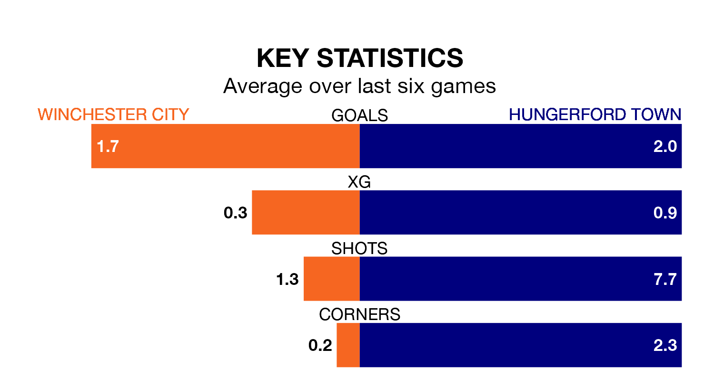

Hungerford Town travel to Winchester City on Saturday in the Southern League Premier South.
The visitors come into the game on the back of a defeat in their last match, having lost to Merthyr Town 3-0 away.
Winchester also lost their last match, 2-1 against Gosport Borough.
With 72 goals in 37 games so far this season, Hungerford are the league's joint-second-highest scorers with 1.9 goals per game. But they are conceding more than average too, letting in 68 goals at a rate of 1.8 per game.
Winchester, meanwhile, are below average scorers, with 1.6 goals per game, compared to a league average of 1.7. They have also conceded 1.6 goals per game.
Town are seventh in the table after 37 games, of which they have won 15 and drawn 10, earning 55 points.
City are four places behind the away side in 11th, with 12 wins and 11 draws putting them on 47 points.
The hosts are in mixed form in the Southern League Premier South, with two wins and two draws from their last six games.
With three wins and three losses over that period, Hungerford's form is slightly better – they have taken nine points from 18, compared to Winchester's eight.
Over the last two years, Winchester and Hungerford have played each other twice. Hungerford won one of them and they drew the other.
Their last meeting was on November 14, when they played out a 2-2 draw.
Updated: 16:41 (UTC), 04/04/24